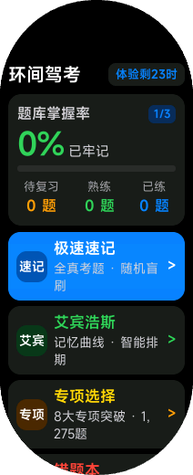

从基础传感器，
到高斯泼溅与自适应。
做过很基础的 DHT22 温湿度、红外人在雷达与 MPU6050 姿态。未来最想在实验室探索的是 3D Gaussian Splatting（高斯泼溅）三维重建，以及测量中的误差纠正与自适应算法，把对真实空间的感知做得更准、更扎实。
03 — SELECTED PROJECTS做过一些，
做过一些，
还想再多试一些。
把过程和结果放在一起，比堆一排技术名词更有用。
让传感器的数据，
在屏幕里转起来。
MPU6050 采集数据，STM32 经串口回传电脑，再由三维模型显示姿态。项目里做了多种滤波算法的可视化对比，用来观察稳定性、响应和延迟。
互补滤波MahonyMadgwickEKF
主页模型使用演示姿态；手机可切换为本机传感器。MPU-6050 / 6-AXIS IMU采集 → 串口 → 3D

04 — OPEN SOURCE两个项目，
两个项目，
具体的小改进。
在 AI 辅助下阅读代码、定位问题和准备提交。下面的链接直接指向已合并的 PR。
● MERGED
拾光课程表
为郑州大学增加课表适配，让课程名称、时间和地点可以被读取。后续修正了下午课程的时间偏移。
郑州大学适配#552 ↗后续修复：下午课程时间 #770 ↗● MERGED
水杉输入法
为候选窗加入鼠标滚轮翻页；另一次提交修复了 MSVC 在中文编码环境下构建测试目标的问题。
候选窗滚轮翻页#351 ↗另一次贡献：UTF-8 编译修复 #331 ↗
05 — SMALL & PLAYFUL小屏幕，
小屏幕，
也能装下新点子。
和 AI 协作开发小米手环快应用，累计突破 3.6 万次真实下载。写过题库速记与微记账，也自写 Python 脚本跑通了无人值守的自动化交付流程。
腕上小工具 / 《环间驾考》与《闪电记账本》
整理了驾考题库做离线速记，加入间隔记忆算法；另一款做手腕快速记账与月度预算，功能简单但很实用。
自动交付 / Python 自动化脚本
写了一个小脚本自动处理分发与激活码发放，跑通了无人值守的自动化交付链路。比起代码本身，更开心的是看它在真实世界里被人用起来。
还折腾过 / OpenCV 图像识别 & SolidWorks 建模
在 AI 辅助下尝试过基于图像特征的自动化识别，也用 SolidWorks 练习过机构装配。深知自己还在入门阶段，继续用实际项目补扎实基础。
06 — NOW & NEXT接下来学什么，
接下来学什么，
从已有实验里找。
STM32 / HAL / CubeMX
从标准库迁移到 HAL，练习外设配置和工程组织。让熟悉的功能在新的工作方式里跑起来。
FreeRTOS
从任务调度、队列和信号量入手，尝试拆分采集、滤波和串口通信。把小实验组织得更清楚。
采集任务→数据队列→滤波处理→串口回传
有想法，就先试试。
遇到不懂的地方，和 AI 一起拆解、查资料、调试。能跑起来之后，再看哪里不对、哪里还能更好。
01 / 问清楚02 / 做出来03 / 实际验证04 / 继续改